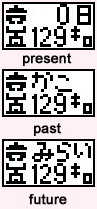
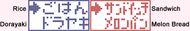
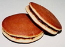
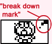
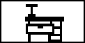

<HTML><BODY>
<CENTER>
<TABLE WIDTH=640 BACKGROUND="header.gif">
<TR><TD HEIGHT=82>&nbsp &nbsp<A HREF="index.html"></A></TD></TR></TABLE>
</BODY></HTML><HTML>
  <HEAD>
   <TITLE>Doraemon Translated!</TITLE>
  </HEAD>
  <BODY BACKGROUND="stars.gif" bgproperties="fixed">
    <CENTER>
    <TABLE WIDTH=640 BGCOLOr="#FFF0F5" BORDER=2px BORDERCOLOR="#669966">
    <TR>
    <TD><FONT FACE="comic sans ms">
<FONT FACE="arial">
<HR>Thanks to Val of <A HREF="http://www.tinkerville.com">Tinkerville</A> for scanning in these instructions! <BR>
For more information about Doraemon, robot cat and Japanese cartoon icon, look <A HREF="http://www.mit.edu/people/rei/MANGA/Doraemon.html">here</A>
<HR>
<B><FONT COLOR="#C71585" SIZE=4>
1. Before you become friends with Doraemon or Dorami<BR></FONT></B>
<FONT COLOR="#FF0000" SIZE=2>
   (1) </FONT>remove the protective battery tab<BR>
<FONT COLOR="#FF0000" SIZE=2>
   (2) </FONT>press the reset button on the back of the unit<BR>
<FONT COLOR="#FF0000" SIZE=2>
   (3) </FONT>set the clock:  Use the A button to change the hours and the B button to change the minutes, then press C to set the time.  Then press the B button to view the main character screen.<BR>
<FONT COLOR="#FF0000" SIZE=2>
   (4) </FONT>in about 5 minutes, Doraemon or Dorami will appear<BR>
<CENTER>     </CENTER><BR><BR>
<B><FONT COLOR="#C71585" SIZE=4>
2.  Once Doraemon has arrived<BR></FONT></B>
    When Doraemon beeps at you, use the icons around the screen to give him what he needs.
    To select an icon:<BR>
    A button -->highlight; B button -->select; C button -->cancel<BR>
    When you want to know what Doraemon is asking for, use the checkmeter icon.<BR><BR>
<B><FONT COLOR="#C71585" SIZE=4>
3.  How to use the icons (an explanation of the screen icons)<BR></FONT></B><BR>
    <FONT COLOR="#8B008B"><B>Check Meter</FONT></B><BR> <BR><BR><BR>
      <B>*Time Passed/Weight</B><BR>
      Here you can see how many days Doraemon has been with you.  This also shows what Doraemon or Dorami's weight is.  Doraemon will start at 129 kilo, Dorami will start at 91 kilo.  If either gets too fat, they will become more likely to break down (the heaviest Doraemon can get is 199 kilo, the lightest is 100 kilo, the heaviest Dorami can get is 199 kilo, the lightest is 50 kilo.)<BR><BR>
      <B>*Hunger/Happiness</B><BR>
      Here you can check how hungry and happy Doraemon or Dorami is.  In the beginning, you will start with empty meters.  Feed them to fill their hunger meter and play with them or give them Dorayaki or Melon Bread to fill their happiness meter.<BR><BR>
<TABLE BORDER=1 BORDER COLOR="#FF0000">
 <TR>
  <TD><FONT FACE="arial" COLOR="#FF0000">When you use the Time Machine Secret Tool, this screen will tell you what "era" (past, present, future) you're in.</TD>
 </TR>
</TABLE><BR>
      <B>*DMP (Doraemon Power)</B><BR>
      As "helper robots", Doraemon and Dorami want to increase their level of excellence, their DMP.  By taking care of them, you can help Doraemon and Dorami reach their full DMP rating of 14 on the DMP meter.<BR><BR>
      <B><FONT COLOR="#8B008B">Feeding</FONT></B><BR><BR><BR><BR><BR>
      Use the A button to choose a meal (top option - rice for Doraemon, sandwich for Dorami) or a snack (bottom option - dorayaki for Doraemon, Melon Bread for Dorami).  Press the B button to give your selection to Doraemon or Dorami.<BR><BR>
<CENTER></CENTER><BR>
<HR>

<P ALIGN="middle"><B>Dorayaki?</B><BR>
Dorayaki is a traditional Japanese dessert consisting of sweet bean paste sandwiched between two (for lack of a better description) small pancakes.  Check out a recipe <A HREF="http://japanesefood.about.com/library/recipe/bldorayaki.htm">here</A></P>
<HR><BR>
      <B><FONT COLOR="#8B008B">Happiness UP Game</FONT></B><BR><BR><BR><BR>
      Select this icon to play the 'picture matching slot game'.  When the 2 images appear on the screen, press the A or B button to start.  First stop the picture on the left side by pressing the A or B button.  Then stop the picture on the right side by pressing the A or B button.  If both pictures are the same, you fill one happiness heart.  However, beware of the picture of the mouse.  If you match up two pictures of the mouse, your happiness meter will empty to 0. Play the game twice in a row and Doraemon's weight will decrease by 1 kilo.
There is also a possiblity to match pictures of secret tools.  When that happens, you will receive the tool in the picture.  In addition, you'll fill 4 happiness hearts!
(press the C button to return to the character main screen).<BR><BR>
     <B><FONT COLOR="#8B008B">4th Dimension Pocket</FONT></B><BR><BR><BR>
  In your Doraemon's world, his friends Nobita and Shizuka will call when they want to borrow a secret tool.  At that time, lend them a secret tool from Doraemon's 4th dimension pocket.  Doing this will increase your DMP.  Treating your friends nicely will sometimes give you a secret tool.  However, if you don't lend out any tools, your DMP will go down and your friends will stop calling on you.<BR>
Sometimes, a mouse (which Doraemon hates!) will come out and Doraemon will call out in fear.  When that happens, select the Pocket icon and Doraemon will drive away the mouse with an air pistol.  If you ignore the mouse, Doraemon may break down.  <BR><BR>
     <B><P ALIGN="middle"><FONT COLOR="#8B008B">Repairing</FONT></B></P><BR>
     
<P ALIGN="middle"><BR><BR>When the "break down" mark appears, use the Repair icon to fix Doraemon.  You must keep giving him repairs until the 'break down' mark disappears.  While Doraemon is broken, his call sign will remain lit.</P><BR>
     <B><P VALIGN="middle"><FONT COLOR="#8B008B">Discipline</FONT></B></P><BR>
Even though Doraemon is an helper robot, sometimes he will call you for selfish reasons.  If his hunger meter isn't full, but he's still not eating meals, or his happiness meter isn't full, but he won't play the Happiness UP game, or he'll eat dorayaki, but his happiness won't go up, use the Discipline mark.  But if you discipline him when he's not being selfish, his happiness meter will go down.<BR><BR>
     <B><P ALIGN="middle"><FONT COLOR="#8B008B">Closet</FONT></B></P><BR>
When Doraemon goes to sleep, his call sign will light up.  Select this icon and let him sleep in the closet.  From the time he goes in the closet, to the time he wakes up, you cannot use any of the screen icons.  If you ignore him and not let him sleep in the closet, until he wakes up, you cannot use any of the screen icons except for the checkmeter and Doraemon will end up sleeping in late in the morning.  If he goes to sleep broken, be sure to fix him when he wakes up.<BR><BR>
     <B><P ALIGN="middle"><FONT COLOR="#8B008B">Call sign</FONT></B></P><BR>
When Doraemon calls for you, this icon will light up. While it's lit up, tend to his needs.  When Doraemon's friends come, this icon will light up also.<BR><BR>


If you don't take good care of Doraemon, he will become disappointed and leave in his time machine and not come back.  If you want to meet him again, press the A and C buttons simulatneously while on the main character screen.  The time and the tools that you have collected will remain the same, and you will be able to play from the beginning again. (5 minutes will pass before Doraemon will appear).<BR>
<CENTER><A HREF="doraemon2.html"></A>
</TD></TR>
  </TABLE>
</BODY>
</HTML>
<HTML><BODY>
<CENTER>
<TABLE WIDTH=640 BACKGROUND="footer.gif">
<TR><TD HEIGHT=58><CENTER><A HREF="index.html"></A></TD></TR></TABLE>
</BODY></HTML>
